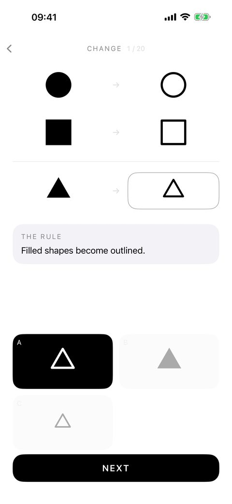
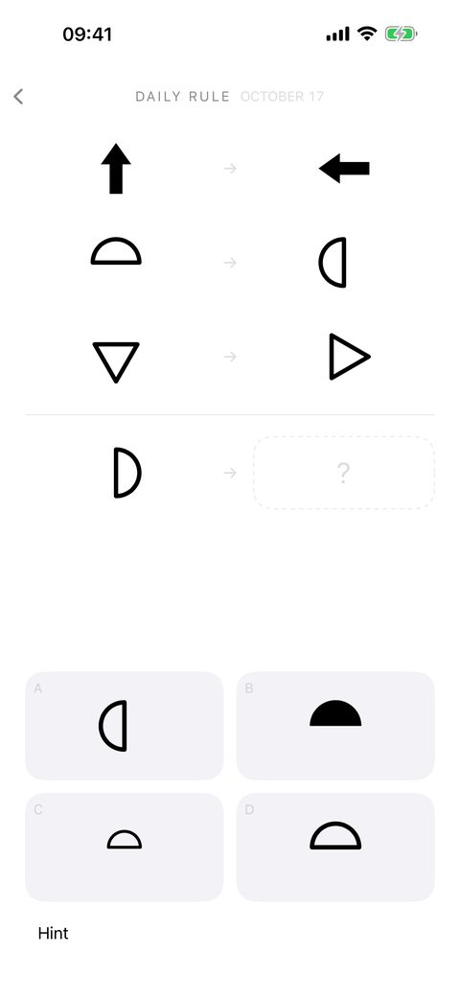
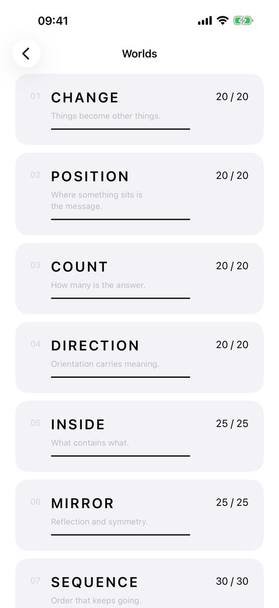

Find the hidden rule. One answer per puzzle.
You are shown two or three examples. The same thing happens in each, and nobody tells you what. Then one more, unfinished — and only one of the answers follows the rule.
Free on iPhone and iPad. One optional purchase, never a subscription.



How it plays
- Look at the evidence. Each example shows shapes before and after. Size, fill, position, count, direction — something changes the same way every time.
- Form a hypothesis. There is no text telling you the rule, and no timer. Take as long as you like.
- Choose. One tap. A wrong answer costs nothing; the puzzle stays open.
- See it. The answer settles into the blank and the rule is written out in one sentence.
One answer, checked
A common complaint about pattern and logic puzzles is an answer you could defend being marked wrong. RULE checks every puzzle against 556 rival rules before you see it, and a puzzle that any of them explains differently is redesigned. A hard puzzle here is meant to be reasoned, not guessed. How that works.
What is inside
- 270 handmade puzzles in ten worlds, from Change to Before, where the game runs backwards.
- A Daily Rule every day — free, the same for everyone, with a Home Screen and Lock Screen widget.
- Endless: puzzles built on your device and checked the same way before you see them.
- One free hint on every puzzle. It tells you where to look, never what to think.
- English, German, French, Spanish, Portuguese, Italian, Japanese, Korean, Chinese and Turkish.
Nothing to interrupt you
No ads, no account, no notifications. No timer, no score, no streak to protect. RULE collects no data and works offline.
Questions
- Is it free?
- The first three worlds — 60 puzzles — the Daily Rule every day and every hint are free. One purchase, once, opens the other seven worlds and their 210 puzzles, Endless, the archive, the full statistics and Daily Rules from days you missed.
- Is it an IQ test?
- No. RULE does not measure you, score you or compare you with anyone. It is a game about the moment you see the rule.
- Can I play with VoiceOver?
- Yes. Every figure describes itself, no two answers in a puzzle read the same, and nothing you reason about is carried by colour. Dynamic Type and Reduce Motion are respected.